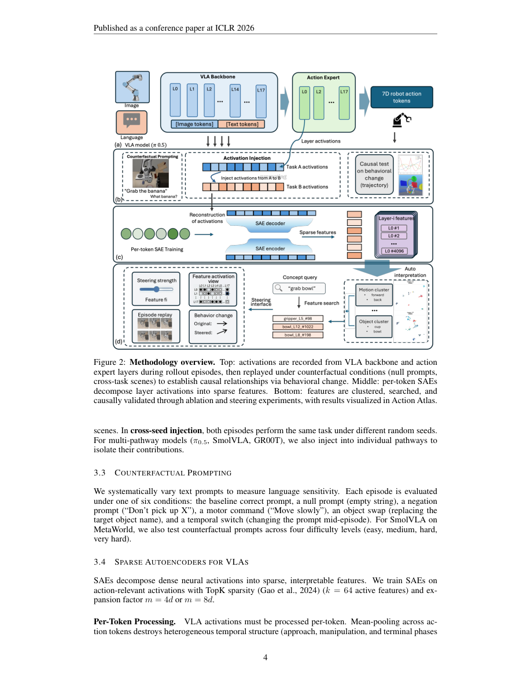

#1
★ 9/10
Not All Features Are Created Equal: A Mechanistic Study of Vision-Language-Action Models
并非所有特征生而平等：视觉-语言-动作模型的机制研究

图 Figure · Page 4 of paper
🎯 揭示VLA模型中视觉、语言与动作的内部机制分工
A mechanistic study revealing how vision, language, and action pathways specialize inside VLA robot models.
❓ Problem · 解决什么问题
视觉-语言-动作（VLA）模型能让机器人同时理解图像、语言指令并执行动作，但我们对其内部如何将多模态输入转化为具体动作知之甚少。就像一台精密机器，我们只知道它能运转，却不清楚每个零件各自在做什么。这种"黑箱"状态阻碍了我们改进、调试和安全部署机器人系统。
VLA models unify perception, language understanding, and motor control in a single neural network, but the internal mechanisms driving their decisions are opaque. It is unclear whether these models truly understand task instructions or rely heavily on visual shortcuts, and how different internal pathways contribute to action generation. This lack of interpretability makes it hard to debug failures, improve robustness, or deploy such systems safely.
⚙️ Method · 方法
研究团队使用三种"机制探针"工具对六个VLA模型（参数量从8000万到70亿不等）进行了大规模解剖实验，共运行了超过39.4万次机器人轨迹。**激活注入**：将一个场景的内部神经激活值强行植入另一个场景，观察机器人行为如何变化，从而判断哪条通路控制动作。**稀疏自编码器（SAE）**：将模型的高维激活分解为可解释的概念特征，最终识别出82个以上的操作概念。**线性探针**：训练简单分类器来检测激活空间中是否编码了特定信息（如任务类型、目标位置等），以此验证各通路的功能分工。
The researchers applied three interpretability tools to six VLA models ranging from 80M to 7B parameters, evaluated over 394,000+ rollout episodes across four benchmarks. First, activation injection transplants internal neural activations from one context into another to reveal which pathways drive behavior. Second, sparse autoencoders (SAEs) decompose high-dimensional activations into interpretable concept features, recovering 82+ manipulation concepts via contrastive identification. Third, linear probes train lightweight classifiers on activations to test what information is encoded where, confirming functional specialization across expert and VLM pathways in multi-pathway architectures.
📊 Results · 结果
**视觉通路主导动作生成**：向空提示（无语言指令）的回合中注入视觉激活，几乎可以完全恢复原始行为；跨任务注入时，99.8%的X-VLA回合轨迹与源任务对齐，说明动作程序与场景坐标紧密绑定。**语言的作用取决于任务结构**：当视觉上下文已能唯一确定任务时，语言指令被模型忽略；而当多个目标共享同一场景时，语言变得至关重要——X-VLA在`libero_goal`任务中，错误提示使成功率从94%骤降至10%；但在`libero_object`任务中，无论提示是否正确，成功率维持在60–100%。**专家通路 vs. VLM通路**：在三个多通路架构（π½、SmolVLA、GR00T）中，专家通路编码运动程序，VLM通路编码目标语义；注入专家通路激活产生的行为位移是注入VLM通路的**2倍**。**表征广度与因果效应无关**：因果消融实验显示，零效应率（即修改某特征对行为无影响的比例）跨模型差异为28–92%，与模型表征宽度无关。
Visual pathways dominate action generation: injecting baseline visual activations into null-prompt episodes recovers near-identical behavior, and cross-task injection causes 99.8% of X-VLA episodes to align with the source trajectory. Language sensitivity is task-dependent: wrong prompts drop X-VLA success from 94% to 10% on libero_goal (multi-goal scene), but have no effect on libero_object (60–100% success regardless of prompt). In all three multi-pathway architectures (π½, SmolVLA, GR00T), expert pathways encode motor programs while VLM pathways encode goal semantics, with expert injection producing 2× greater behavioral displacement. Contrastive SAE analysis recovers 82+ manipulation concepts. Causal ablation reveals zero-effect rates of 28–92% across models, independent of representation width. Per-token SAE processing is essential for action fidelity on most architectures, though mean-pooling improves fidelity specifically on X-VLA.
🌟 Why It Matters · 为什么重要
这项研究首次系统地揭示了VLA模型内部的功能分工，打破了"语言指令驱动机器人动作"的直觉假设，证明视觉场景才是主要驱动力。研究还发布了交互式工具平台Action Atlas，为机器人领域的可解释性研究提供了重要基础设施，有助于未来更安全、更可靠地设计和调试机器人系统。
This work challenges the intuitive assumption that language instructions primarily drive robot behavior in VLA models, revealing instead that visual scene representations are the dominant control signal—a critical safety and reliability insight. By releasing the Action Atlas platform for interactive exploration of VLA internals across six models, it also provides the community with essential infrastructure for interpretability research in embodied AI.